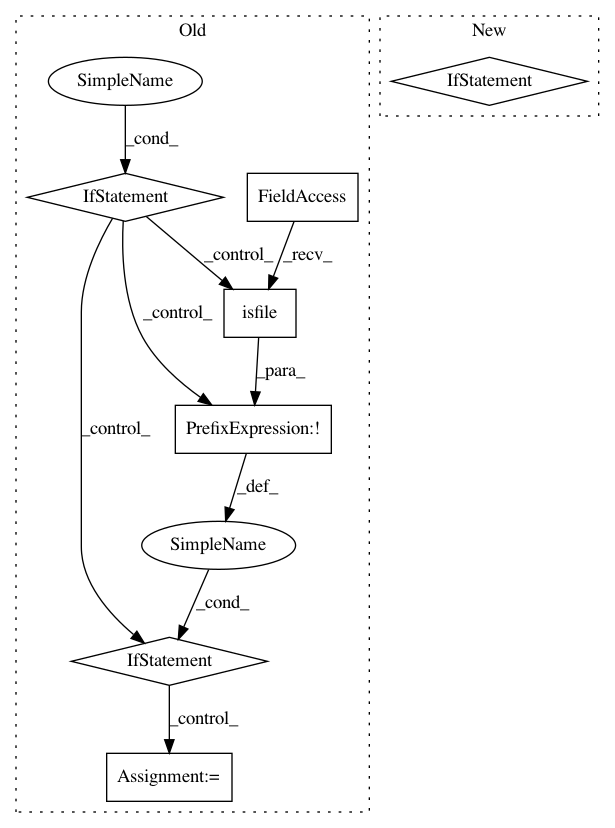

4bfebd857d9b94dff98e88c8cc59880f8fa54ec7,torchaudio/datasets/vctk.py,VCTK,__init__,#VCTK#,67
Before Change
self._path = os.path.join(root, folder_in_archive)
if download:
if not os.path.isdir(self._path):
if not os.path.isfile(archive):
checksum = _CHECKSUMS.get(url, None)
download_url(url, root, hash_value=checksum, hash_type="md5")
extract_archive(archive)
if not os.path.isdir(self._path):
raise RuntimeError(
"Dataset not found. Please use `download=True` to download it."
)
After Change
archive = os.path.join(root, archive)
self._path = os.path.join(root, folder_in_archive)
if download:
raise RuntimeError(
"This Dataset is no longer available. "
"Please use `VCTK_092` class to download the latest version."
)
if not os.path.isdir(self._path):
raise RuntimeError(
"Dataset not found. Please use `VCTK_092` class "
"with `download=True` to donwload the latest version."
In pattern: SUPERPATTERN
Frequency: 3
Non-data size: 7
Instances
Project Name: pytorch/audio
Commit Name: 4bfebd857d9b94dff98e88c8cc59880f8fa54ec7
Time: 2020-08-19
Author: abhi.dubey011999@gmail.com
File Name: torchaudio/datasets/vctk.py
Class Name: VCTK
Method Name: __init__
Project Name: 1adrianb/face-alignment
Commit Name: f90efe38fb0b1019e5bdc06b8a325aefe44893ea
Time: 2018-12-19
Author: bulat.adrian@gmail.com
File Name: face_alignment/detection/sfd/sfd_detector.py
Class Name: SFDDetector
Method Name: __init__
Project Name: 1adrianb/face-alignment
Commit Name: 4b1a4f9e0be8bc88ad627475e12381798d97470d
Time: 2020-12-13
Author: adrian@adrianbulat.com
File Name: face_alignment/detection/dlib/dlib_detector.py
Class Name: DlibDetector
Method Name: __init__